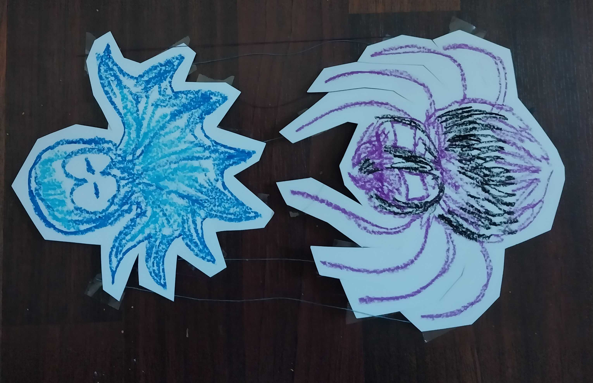
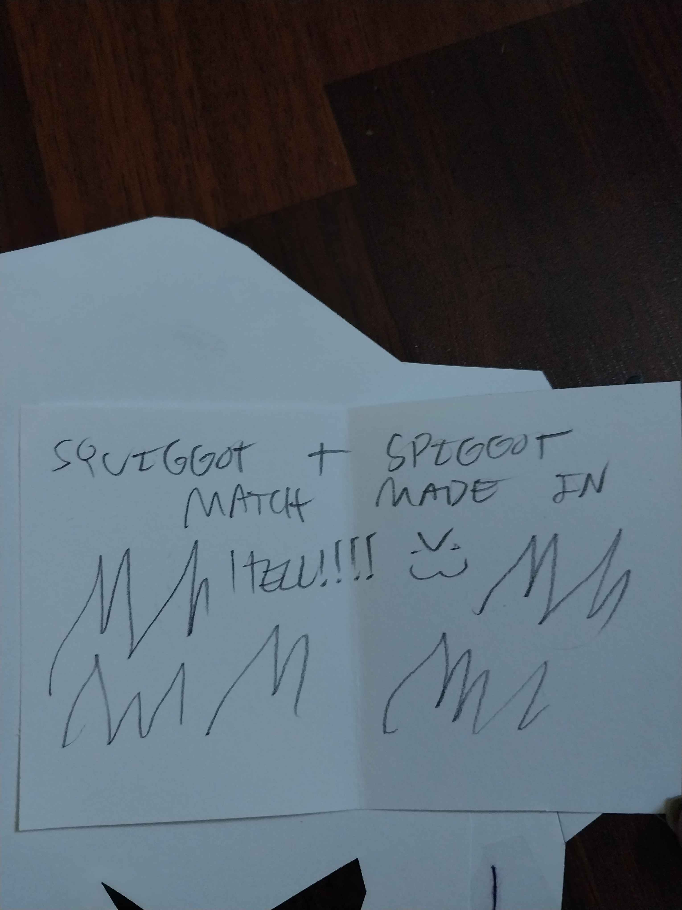
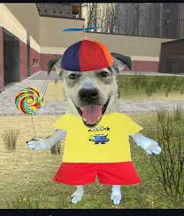
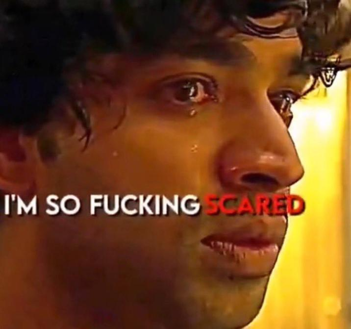
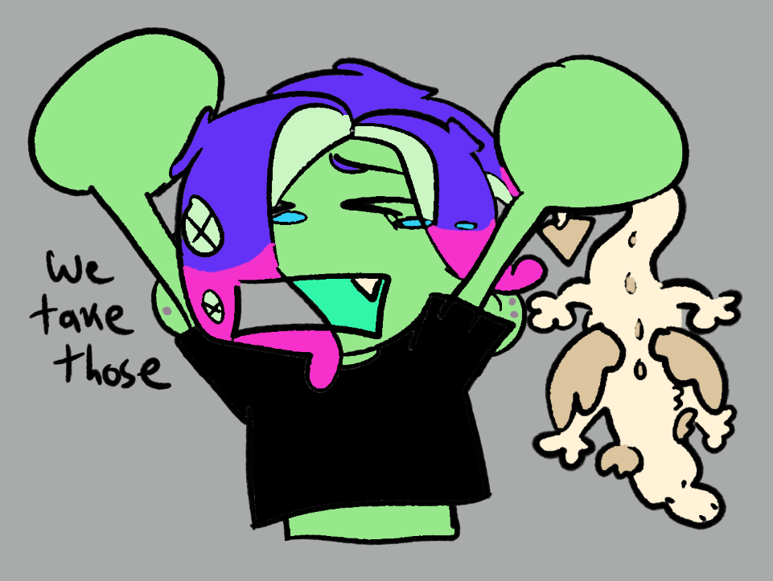
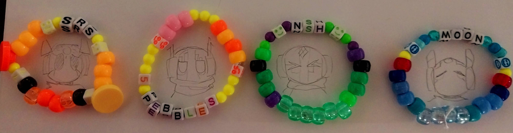

outside...eww...
hii we went outside again and our front schedule is a lil weird rn so im not gonna have time to do anything cuz i leave tm, so, yeah! but i was, indeed, here. that is all. i am also experiencing new terrors and levels of brainrot previously unknown to mankind, but you know what, we fucking ball. but seriously why have we been to the city so much this summer. WAIT. i remember i have a topic. okay maybe we mentioned it somewhere already but this clanker shit is getting on my nerves. and no its not because 'waa waa im a robot' no it is because waa waa i am a poc of african descent and i dont like how white people are getting to 'play toys' but instead of toys its making slurs for imaginary marginalized people. why. why do we do we need to do that. im watching alpharad's final mongy monday of their subathon and the stream started with clanker bs and then they all went woaahhh when one of their friends said 'is there a rigger...' (as in Live2D rigger) like are we in highschool? idk. i don't think it's funny. but maybe i am Too Woke... love the mongy though #sheep
our day
heeyy. look at the date. woowww. do not look up "august 8th japanese" and scroll down. anyway, the folks made some stuff for us, and by folks i mean the nerd and my goat (gangle of all time), so lets go look at that.
 ohhh how nice its like :) ship art :) i hope theres a nice message on the back. i think peri said he only used 'two slurs' which is pretty good for him so

this is so fucked up...i cant believe him...Oh My Gah! anwyay no he did write a nice thing on the back of the octopus lol dw. hes so weird. gangle drew me and vris some art, she was gonna shade it but then bad things happened so she didnt feel like it which is so valid. i just reallllyy wanted to see me in the animu style cuz i cant draw like that so. lets fucking go. also i watched nova dracomon (leader of the fictionfolk webring!)'s accessibility panel in othercon, learned lowercase text is ok as long as im not stringing words togethr, So Yayyy!! we've been talking in there like... a little bit, but our anxiety is bad so not too much. been working on adding alt text more---i finished adding it to all our zines. (loud sigh of tired) also the new tadc episode trailer is so fucking peak. me when new tadc episode

gangle when new tadc episode

alright. bye.
me when i get a dumb idea
Honestly I can't remember who it even was that got this idea in the first place. But we were like. What if we make a silly ass static forum just for us to post and talk to each other on. Cuz like you'd think we would talk more with each other considering we live together in mind, but beyond simple chats we don't really get into much. I'm not discussing philosophy with Vriska ok. But like. Maybe I should be yk. So forgive me as i continue to work on that and not the other tasks!! Hehe I love doing the task that is not the task I'm supposed to be doing!!!
updoots
Sup gamers. I feel like I say that a lot. Anyway, I *finally* made an update log so now we can like. Idk. Keep track of stuff. I'm working hard on the MH shrine, but it's taking a while because I Yap. Also our therapist plays Monster Hunter this xi is so peak i fear... Holy balls my typing style is obnoxious. We're going to driving school soonish, so wish us luck lol! also i love melonland forums everyone there is so nicies and sweeties
have we found it
And by "it" lets just say. A way to socialize with people online that doesn't make us feel like we're tearing our brain out and stomping on our heart. Yes by the way i think the answer is yes. Im supposed to be working on the MH shrine but i'm having too much fun just... chilling on the melonland forum. Even doing a Posting once or twice. And it's making me wish forums were more popular because that way of posting makes us feel really safe! I was reading a board about site accessability, and it hit me Wow our site SUCKS so... I think this week we're gonna do a large sitewide project of making alt text for important images, and maaaybe doing alt text for art too but we draw a lot so i don't know. We used to do alt text for everything back in the day but we only stopped because we figured "no one is gonna see this, who cares" but i think people are Seeing so. So yeah. I did Not know that all-lowercase or all-uppercase typing fucks with screenreaders, so from now on i will try to use text-transform and see what happens? Im not going back and retyping everything on our website into normal caps but we'll try to do so from now on ♡ edit: I'm so sad text transform means i cant randomly capitalize the first letter of words for emphasis ohhhhh woe is meohhhh im gonna die
hii againnn
oh...it's august...thats awful. anyway. well whats good about that is that peridot is going to be forced to be nice to me and vris for a day i think that'll be funny. he HATTES vriska ok he hates her. and she vaguely dislikes him. also peri keeps calling vris and i's birthday our 'freakday' and i guess i won't stop him... in our system birthdays aren't really that serious, just a fun day for us to make stuff for each other as we don't make gifts for each other that often. some days hold more significance than others. when i was first thinking about what day to pick i haaad to pick 8/8 right come on guys its me Number Eight in German and my typing quirk is Number 8 too, which is stolen from one spider you might know, so obviously she wouldn't just let me yoink the day. so we share it i guess! i mean we're kind of a unit so i don't mind. i cant take 8/8 from mr. Spider Guy himself so... yeah! ummm i might like write a thingy caus i was inspired by someone's essay (You Probably Know Who You Are Hii!) so watch out for that...later...er...also i overcame an anxiety thing today. our social anxiety is SO bad like its really bad i genuinely feel like our whole life is being sabotaged by it but we try okay we try! oh let me talk about typing quirks a little bit more. i think theyre sooo silly and fun idk why people hate on them so much. okay, i get if its like unreadable, and i also think websites in particular should have a toggle, but if your just talking to your friends or yapping online it shouldnt matter. sadly im not cringe and free yet so i tend not to use it (i also dont want people clocking me as a homestuck fan because we generally do not like homestuck) online but peri's been using his more so im happy for him. uhh but yeah my muscle memory is to use 8 instead of b generally and sometimes i accidentally still use 8 when im trying NOT to lol. final thing: my biggest fear (hyperbole) is seeming white like do we seem white. i feel like we seem SO white which is probably because of the stereotypes that plurality and 'kin stuff is a white person thing (okay...the community is very white though...) but we ARENNTT WE ARENT. we are mixed and our hair is a nightmare to maintain but we move. speaking of i realllyy need to brush it its getting bad...yk its bad when you can rip out the little glob knots.... okay bye
been a bit
hey. ive been kinda interested in getting back into live2d, mostly for animation not rigging. but we'll see about that. umm we just got back from a certain noteable waterfall, it was pretty cool, peri'll have morr to say about it. aug. oh, also we came out transed to another famiyl member yay. our therapist reaally wants us to get an eval, we know psych is evil but...sigh...might as well...i just hope we dont get diagnosed with something and then trump / trumps friends decide to institutionalize everyone with said diagnosis in the next few years. lol! lollers guys! oh and the visa/mastercard/whatever situation happening right now is so stupid. sorry you cant buy our websitr it has one droplet of blood content on it...good luck gamers...
webrings...webrings...
how is july almost over. im gonna have a mental break fellas. anyway, ive been working hard on making a Webrings, weve kinda wanted to for a while but couldnt think of something that didnt have a ring yet. but i lowkey fw monster hunter and theres no MH ring so...yanno be the change you wanna see...or something. dude i had to open blender for this shit. theres nort really any clear renders of me (zoh shia) or my evil brother (gore magala) so i just did it myself. i had a really clear vision for the webring page's looks and i kiiinnda did it so im happy enough! i just hope it isnt too eyestrainy but i wanted to try dithering... also, i want to join some more rings but um. anxiety guyse. ill figure it out lol. i was looking on the undead side of tumblr and its silly bc like i can kinda relate but im Clean Zombie okay im detergent and bleach type zombie so i dont really identify with the whole, rotting flesh thing. too gross to be alive vs too clean to be alive... umm yeah nayway i hope peri will work on the webring too Please Pleeeeaassee.
after i shower i might make a "site draft" page for yall to look at the drawn mockups we make for each page! i think that stuff is neat.
lets learn something new
we've been vaguely interested in petz for like...i dunno maybe close to a decade? but never really looked into it too much. sadly ive seen one too many beautiful hexies and i fear i want to make some cool shit too. so. wish me luck on my ventures, im already figuring out petworkshop but lnz looks a bit...Initimidating! if we could learn live2d i think this will be fine though. our brain is of middling size. i miiiight have spent an hour or so creating inbred monstrosities before i tried learning anything but look it was my supplement
how do i make this stop
heyyy its your neighborhood favorite "instantly depressed upon arrival" fronter acht moon splatoon, and i come with complaints. we have dreams, we've never really had "good" dreams ever maybe once or twice a year but not really bad ones. but recently after everything has happened we just. keep. dreaming. about. THEM. all of Them. i want it to stop. sometimes they do bad things but most of the time we're all friends again. vivid vivid dreams of befriending these motherfuckers. stop. make it Stop. there's a fragment of a middle schooler still left in us that yearns for playing videogames and staying up at night late talking to friends and screaming over discord calls and always having someone to talk to and i want it to shut the fuck UP. i just want it to shut up. but its okay because fat tenna guys...okay no fat tenna wont fix my problems i guess this is something to bring up to the therapist next time, and she'll use her wizard powers to brain blast our good memories that haunt us all away forever. thats how that works right.
it's just hard to feel like we haven't wasted the past 7 years, being a stupidass kid surrounded by people who didn't know how to help or didn't want to help. but it's over now, it's been over ... just wish trauma didn't haunt and haunt 'n haunt... oh i just want u to know it terrifies me when i realize people actually look at this website. for some reason. who are you. hi don;t hurt me
iii did it
woopee i made all theeuuhhhhh pages. for my thingy. the thingy on my main page. i made all the minidome pages. took a little while but i just had to sit down and lock in and it was easy nuff... erm i actually feel kind of awfulsauce right now. for reasons i cannot disclose cuz guess whos still paranoid about being stalked online. lollers guys that is so skibidi and funny!!! (the terrors) anyway, i keep drawing tenna its getting bad i think peris gonna fucking gut me. its okay though because i got to tell my therapist about tenna deltarune .
hoh my gawh
guess whos drawing other stuff instead of working on af . well its fine af is supposed to be fun not stressy so ill just go wit da flow with it ya know. if you may notice ive been lowkey kinda drawing a few fat people and i need u to know. this about me. i love them okay. not in the weird way. okay sometimes in the weird way but not always i genuinely just finfd them so beautiful. our ex was a bit chubby its just my type i dunno. so yeah thats what tgas about. i think people should draw 102018293820983 more fat ppl bcus why is every character ever a twiggy thing. we dont have many plus sized characters either so we'll work on that. also fat itself is jsut so fun to draw?? idk as a soft things lover i just enjoy it so much. do it. you do it. okay! yeah thats all. wait nvm. yah i came out but i guess one of our ex friends outed us when they were talking to our mom about how we are evil and bad and desrrve to be haraassed back in uhhhhh october?? thanks a lot bru...so yeah she knew :skull: we'll see what happens from here...
wow
artfight. my friends. i have drawn refs. im freakng. responsivle. also im supposed to be coming out as trans to our mom today its my therapy homework but. shes out and its lke 11 pm. now, that wont stop me though cuz ik peris ass is NOT doing that for us and hes fronting tm so. :) we'll see what happens :skull: anyway ya been suuuper distracted with af prep. we'll work on te website once that stops distractinb us who knows when
lots to do
i drived a car. terrifying. not for me but for the world. lol it was fun though but i cant imagine doing it on the road...with PEOPLE...social anxiety plus fear of cars wombo combo!? anyway. i was walking around the city w my fursuit paws on like a fuckin boss. tell me that isnt aura. as the fellow gen zs would say. pride was PACKED dude. it was okay i only got one streetpass :/ ONE...and the whole fing state was there basically...anyway, i finished up a page for vris, shes. so. intresting. the fuckin specimen. dude. soetimes it hits me: wow we really r a system. who are thess people. that aint me dude. tf. peri gets piss angry at people sexuaizing tenna and i just have to grit my teeth and power through as i think of violently pulling his wires. i mean...huh? sorry i dont like to get too weird on main (i am a MINER! i want DIAMONDS) but its ok to be a little wweird i think. begging the authority figures for a crt bc im normal. yeahhhh i think i might be techum. i mean my insys partnerthing is a robot already, i was cooked from the beginning but tenna did something to me. (deltarunes been out for a week now i think we'll stop spoiler warning stuff, soz). i finally drew something for the Tum Blr today, but also for me because it was fun, i really liked that person's silver design. oh i worked out today and cleant up too! our sewing desk has been pretty awful for like a year so i cleaned it a bit. sometimes i remember im looks to the moon rain world. im looks to the moon rain world if she was a gay mentally ill transgender teenager. i'm not like suuuuper deep into fictionkinning particularly i usually just go off vibes and chill (see: zoh shia), but peri kinassigned me so. yea. he does that a lot. im waiting for the day he kin assigns gangle /hj. but, he saw that our dynamic was similar to how we are in the game, so he saw a chance and swooped for it---and hey iam all for presenting in headspace with a simpler form and one that doesnt make me cringe! nothing wrong with octarian me it just...feels like the real me, which i dont like, skull emoji. and then peri realized how vris slotted perfectly into the funnyman role and was like hey...heh. youre...NSH. and it WORKED??(vris only went along w it because itd make me happy i think, but hes really grown into it now, its nice). gonna go back to the city this weekend, short term goals before then: work on the paragon page, finish the html for my minidome pages, work out more lol, but i leave front tm so that'll have to wait! seeya
lets get gay or somehting
going to..pride soon..ewww gay!? jk. im gonna bring the paws and the like. yk. ive been feeling gross and sappy towards the headmates, i love them all lots.even if being a system is. heh. lets just say... TIRING. at times! also our social media feeds are so confused because of all our different interests its kinda funny. i dont mind seeing stuff the others like but its silly 2 me. im playing dellarunish chapter 2 (its peam), then hopefully peri can play chapter 3 soon, that chapter is FOR him. then i can play chapter four because that shit is for ME. i would like to experience it lol. goals this summer: learn to drive. maybe even get a job but thats up in the air no ones hiring and especially not hiring weird neurodivergent anxious teenager with 0 experience. oh we got invited to national honor society again we areNOT doing that bruh. we are serially good at school, sadly, we arent a goody two shoes national honors society sheep, im sure its great and fine whatever, but idk i feel like the kids that do that are simply not the kind of people we would get along with. we just hate the school system too much to do that kind of thing. just because we do well in the system doesnt mean we like the goddamn system
gaster vs aster??
hey. i feel a little sick, i think im scared of the summer and tired and demotivated but. well. whats new with me. paws are almost done, also peri gave me perms to work on his game?? so i might do that sometime. yay! check out this awful fucking presentation i made bored as hell in class: gaster vs aster. its full of absolutely broken toki pona (i got kinda freaked out of using li cuz i was tring to teach my friend some toki, and the linku definition wasnt making sense to her or me, so i just ended up using a bunch of differnet particles for some reason??) and english and tokinli. enjoy it. or hate it idk but yeah me and friend have been obsessed with aster / wing gaster . umm its cool theres new splatoon i guess but its about mid cut so...just kidding guys...deep cut is fine... i guess... (trauma association). might play some deltarune, but i dont know, im sad i want to stop being sad! grah! grah!! gr!!!! insert discord sob emoji
switch two who
low key i sort of jusst forgot the switch 2 came out. literally who gaf. who has the money for that. idk. we love nintendo. but i feel like they dont need our money and we dont need their games yk. their practices recently have just been...really lame esp with the palworld lawsuit. dont wanna support them DIE!!! ill just wait for tomodachi life and play that on our switch 1 (unless our dad forces a switch 2 on us whihc...might happen? hes been kinda broke recently so who knows) buy well priced games like rain world and deltarune okay :heart:. my friend today said that asriel dies as a newborn in deltarune and i laughed at her very loud she played deltarune blind challenge complete his side of the room is right there. its ok im not being mean i told her i would say this on my web site. umm yeah. peri has sucessfully influenced me into enjoyng eeeveelutions man fuck that guy /aff /violent
i understand u kris deltarune.
yeah thats all. i had like a really thoughtful idea for a blog post earlier today and it is gone. sorry but i did go outside today (woah) and saw pigeons and lots of ducks and even a terrifying beast with its ovipositors out that was awesome. slash sarcasm. bye. oh wait i feel like me and peri should have switched which chapters we played cuz vro...3 is literally so himcore and little blud was struggling to have the same pretentious emotional hullabaloo i totally would if i played ch4. sad. so sad. (literally nothing is stopping me fromplaying chapter 4 skull)
deltarune! just in today!
woah..its..here..yeah i beat chapter 3 already...oops...(should be studying for finals) peris gonna play chapter 4, so youll probably get his thoughts on that. but much later when its been out for a while we'll go in depth bout it. it was good thats all ill say. ive started calling vris/sig "sigska" and i just think thats very silly. i love her by the way. anyway yeah delatrune, also, we'll probably go to the pride march this month, maybe i should finish the paws before then (got a lil demotivated for a sec but WE MOVE) also i started the adventure time rewatch! thats gonna take a while. ouh.
YAY.
happy juuuune gays and gayettes!! guess wgat. i told our therapist baout the system and we dont have to singlet roleplay anymore YAYYY!! lets. fcukin. go. alright umm i got art i need to draw, but yeah, i am happy, now i wont be the only one forced to therapyland. go my peridot. go. 
the asylum
its almost pride month that is very cool. i had to go to our fathers house recently and im losing my goddamn marbles. one of the things i hate MOST in the world is animal abuse / neglect and our dad keeps getting animals. why. he already has no time for that. every time i go over which isnt that often but still. istg there is a new creature. it stresses me out soo bad also he just kidna sucks, like why are you defending trump to my face. STILL. he knows were gay but nothing more than that, gamers i kind of want to come out as trans to him just to spite him. we're his "favorite daughter" i think it would give him a reality check. anyway, going there makes me really grateful for our house and our mom, we have it good. in terms of the site, eeeeveennttually we're gonna work on headspace pages, i want to make a special lil thingy majingy for myself too. at one point. not today though its late. big goal we have with the site rehaul is just to try out new things in css and html, make some cool stuff ya know, our old site was supra lame. yeah not much goin on with me other than like...being kinda sad but thats just the breaks man
i am yired
aughh...our body has been thru so much physical work these past 3 days...we hoked up a mountain, then theres our schoolwork as well this week, our legs are COOKED!! okay um oh yeah i remembered lowk im trans and maybe one day, we should. idk. try and pass. i dont see that happening like...ever unless we end up going on t one day, but as it stands now i dont think any of us are interested in that :P also we arent friends with any trans ppl currently that kinda sucks. my transgenderists... its a little lonely, sort of, not really (3/4s the system is transmasc). earlier i asked gangle "is it okay if we masculinize the body" or smth like that and she replied "nothing you do to this thing will make me hate it more than i already do." i just thought that was funny hey can someone free her. oh happy 10th anniversary to splatoon i guess ( guy that has mixed feelings on it)
doing your own thing
hey, i'm back. the reason i started my sonic tumblr was because i knew i had like. a really weird niche. well i didnt KNOW. honestly i thought no one would care about my "crackship". but i was like...well, someone out there might like it. and a few people do. so idk i just think thasts beautiful. hey did you see the gay fanart i made of me and sig i drew that after our sister pissed us off. we share a pc and both we + our sister can be unreasonable about it, but i feel like she is way worse about it (she's younger), also once she made me sob and said i was guilt tripping her cuz i told her i had a bad day and would like to get on :skull: ah....ahhh...aahhhhh.............we just want our own room one day vro. ahuhm. anyway. i want to make a scourgespio shrine see you soon , i feel pretty good today
frax...
eww three day front streak. i been listening to the new food house album i didnt know about til a few weeks ago, pparently frax was in our region and we didnt know this is so FUCKED UP!! her and gupi's music is inspiring me so much right now though. maybe we should finish our fursuit partial. might make paws soon now that we can actually sew! i love being trans , plural, and a furry, happiness peace and love !! also might tell our therapist about our plurality soon aough
passion
posting my art online always makes me lose some passion if that makes sense. i feel like i have to live up to expectations, even if thats fake. literally who cares. i dont think ill stop posting, i was approaching religious levels of posting a lil bit ago (posting at least twice a week) but it stressed me out bad. itll probably mess up my "staying power" but who cares, i'm an artist not a content machine. we have these ocs mal and laela, ive been trying recently to try and draw laela, shes very hard to draw (our art style went into remission due to the at phase a few years ago...and now sonic lol) i already struggle with humans somewhat nowadays but theres smth about her anatomy vro. augh. me and sig danced to hey ya in headspace, i love that one animation soososo much, tried to pull pebbles into it but he claimed there wasnt enough gpu so he couldnt dance with us. he is actually just very lame. slash affectionate i want to put him in a big black shirt that says emo in impact font. today gangle will start on her page i am very excited!! here we love gangle :) check out these bracelets i made yesterday

not pictured is a sakura bracelet i made at gangle's request. i remembered we had these orbs beads lying around, they remind me a lot of pearls so i made some of our local group! my favorite is nsh's no bias or anything. okay bye : ) i feel pretty happy even though school is uh..stressful rn
we're back in business
wow..its bneen so long...(like one week). greetings from my communications array also known as my keyboard, i have no braincells and ummmmmm yeah. ok. bllogging yes. so peri was the one who finally began the site rehaul, there were a few reasns why we did it, lemme outline it for you
- trauma
- weve had the same layout for ~two tyears
- we became a system so we didnt want to share the same space anymore, we dont have the same aesthetic wants and needs (dang is it nice to have a blog to myself lol)
- did i mention the trauma. oh yeah? well here i have mentioned it again
- we didnt use folders for anything. ANYTHING
so yeah! i hope you like what we have done with the place. if you have been here before. if not then hi. (im going craxzy this font doesnt have numbers in it
oh also tumblr has been prety fun the sonic community is very nice